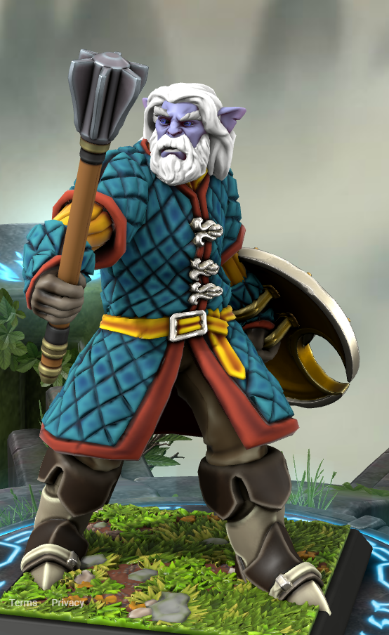
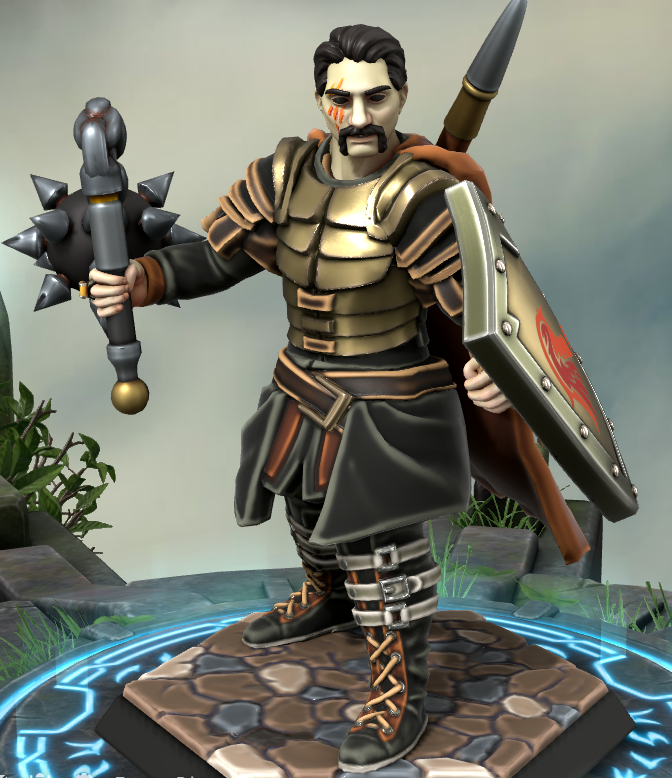
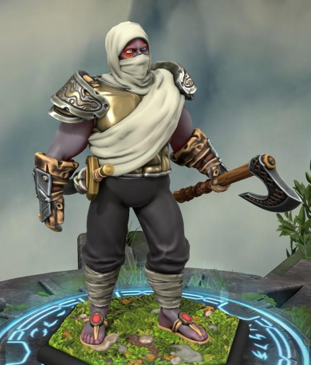

Olejon Boldbreath / Balqen

- has hired liberty prime as his bodyguard few months ago, after he saved his ass from an angry mob
- grew up in a tribe
- served in the cresswel army and retired after lapaz renkor was defeated
- earns his money by scamming people as a fortune teller post war
- seems to be fascinated with lapaz renkor
- had to change his name to olejon to avoid possible trouble that might be associated with his real name (didnt want to go too much into details)
Last Updated: 2023-08-26
Haphaestus

- Not a native to the lands
- Came from far lands in search of an information source
- Hephaestus was a faction agent in the organization known as the REDACTED, which he and his brother were left to at birth, never knowing his biological parents.
- Started traveling because he wanted to find his old teacher, Mr. A. Nobel (the mentor of Hephaestus and Vulkan, and also their father figure in the organization). Before going missing, Mr. Nobel left a mysterious letter containing important information about the REDACTED and hinting that he may be hiding out in Amul and asking him to meet a contact of his in the Green Islands.
- Alfred noble and vulkan are known
- Was a part of an “organisation”
- Paladin
Last Updated: 2023-08-26
Liberty Prime

- hides his face under a mask
- got hired as olejons body guard after he saved him from angry mob
- is native to amul
- loves the common folk and hates nobles
- macdoyle mentioned him in a certain "legend"
- loves fighting and getting into brawls
Last Updated: 2023-08-26